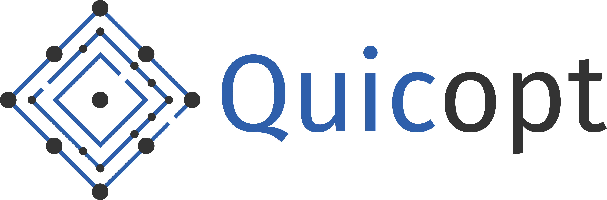
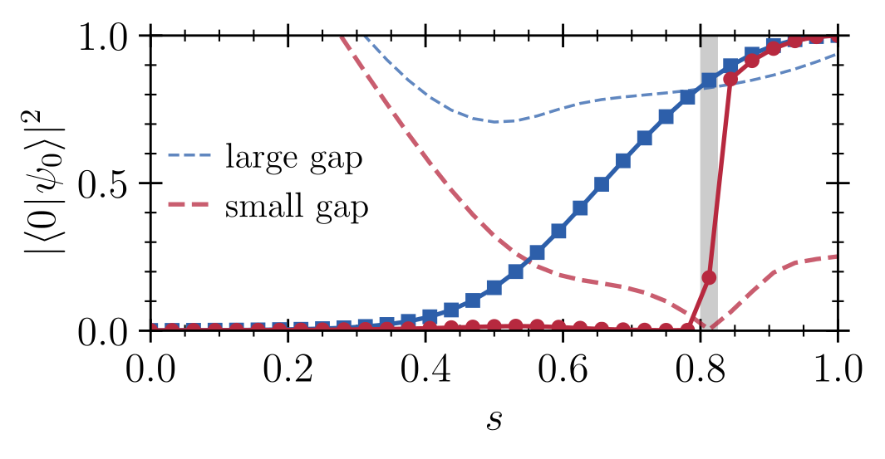

group leader · prospective founder
Tim Bode
I lead Quicopt — a quantum-inspired optimization spin-off out of Forschungszentrum Jülich.
Previously: PhD in condensed-matter and many-body theory at the University of Bonn (summa cum laude, 2021). MSc and BSc from ETH Zurich.
- now
- scaling Quicopt toward spin-off
- research
- quantum and quantum-inspired optimization algorithms
- open to
- pilot projects with industry

Quicopt builds optimization software inspired by quantum physics for problems that classical solvers handle poorly — multi-supplier BOM sourcing, AC optimal power flow, blending and pooling, native higher-order binary optimization. It runs on standard hardware, no QPU required. Hard physics, applied software, shipped.
- 2025 / 12Start-up Transfer.NRW grant.
- 2025 / 11Helmholtz Enterprise Spin-Off — accepted into the 41st intake.
- 2024 / 11Helmholtz Enterprise Field Study Fellowship.
- talksASML, NASA Ames, U. Minnesota, DFKI, DLR, ZEBRA Demo Day.
Research
My work runs from non-equilibrium field theory through mean-field optimization to beyond-mean-field corrections, with sidelines into field-theoretic methods for stochastic processes (J. Phys. A) and experimental photon condensation (Science) — first-, last-, and sole-author contributions among them.
Selected publications
-
Beyond-mean-field fluctuations for the solution of constraint satisfaction problems
-
Quantum combinatorial optimization beyond the variational paradigm: simple schedules for hard problems
-
Mean-Field Approximate Optimization Algorithm

Forthcoming
New manuscripts are in preparation, extending the line above. Titles and preprints will appear here as they do.
Full publication list (15)
- Foos, Epping, Grundler, Ciobanu, Singh, Bode, Helias, Dahmen. Beyond-mean-field fluctuations for the solution of constraint satisfaction problems. arXiv:2507.10360, 2025. link.
- Müller, Singh, Wilhelm, Bode. Limitations of quantum approximate optimization in solving generic higher-order constraint-satisfaction problems. Phys. Rev. Res. 7, 023165 (2025). link.
- Bode, Ramesh, Stollenwerk. Quantum combinatorial optimization beyond the variational paradigm: simple schedules for hard problems. Phys. Rev. A 111, 032411 (2025). link.
- Shapiro, Weber, Bode, Wilhelm, Bagrets. Quantum simulation of the Dicke–Ising model via digital-analog algorithms. arXiv:2412.14285, 2024. link.
- Bode, Wilhelm. Adiabatic bottlenecks in quantum annealing and nonequilibrium dynamics of paramagnons. Phys. Rev. A 110, 012611 (2024). link.
- Bode, Kajan, Meirinhos, Kroha. Non-Markovian dynamics of open quantum systems via auxiliary particles with exact operator constraint. Phys. Rev. Res. 6, 013220 (2024). link.
- Lively, Bode, Szangolies, Zhu, Fauseweh. Noise-robust detection of quantum phase transitions. Phys. Rev. Res. 6, 043254 (2024). link.
- Misra-Spieldenner, Bode, Schuhmacher, Stollenwerk, Bagrets, Wilhelm. Mean-field approximate optimization algorithm. PRX Quantum 4, 030335 (2023). link.
- Bode, Bagrets, Misra-Spieldenner, Stollenwerk, Wilhelm. QAOA.jl: toolkit for the quantum and mean-field approximate optimization algorithms. J. Open Source Softw. 8(86), 5364 (2023). link.
- Meirinhos, Kajan, Kroha, Bode. Adaptive numerical solution of Kadanoff–Baym equations. SciPost Phys. Core 5, 030 (2022). link.
- Bode. The two-particle irreducible effective action for classical stochastic processes. J. Phys. A: Math. Theor. 55, 265401 (2022). link.
- Öztürk, Lappe, Hellmann, Schmitt, Klaers, Vewinger, Kroha, Weitz. Observation of a non-Hermitian phase transition in an optical quantum gas. Science 372, 88–91 (2021). link.
- Lappe. Non-Markovian dynamics of open Bose–Einstein condensates. PhD thesis, University of Bonn, 2021. link.
- Öztürk, Lappe, Hellmann, Schmitt, Klaers, Vewinger, Kroha, Weitz. Fluctuation dynamics of an open photon Bose–Einstein condensate. Phys. Rev. A 100, 043803 (2019). link.
- Lappe, Posazhennikova, Kroha. Fluctuation damping of isolated, oscillating Bose–Einstein condensates. Phys. Rev. A 98, 023626 (2018). link.
Talks
- 2025 / 12ZEBRA Accelerator, Start-up Village JülichDemo-Day Pitch
- 2025 / 11Helmholtz-Gemeinschaft, Berlin41st Helmholtz Enterprise Intake Pitch
- 2025 / 11ASML, VeldhovenMasterclass #81: Quantum Computing
- 2025 / 11Innovationsförderagentur NRW, DüsseldorfPitch — Start-up Transfer.NRW
- 2025 / 08Quantum Future Academy, Forschungszentrum JülichQuicopt Project Presentation
- 2025 / 05DFKI, KaiserslauternQuantum (-Inspired) Optimization
- 2025 / 04German Aerospace Center (DLR)Journal Club
- 2025 / 04Fine Theoretical Physics Institute, U. MinnesotaQuantum-Inspired Optimization: Lessons and Perspectives
- 2025 / 03NASA Ames, Mountain ViewQuantum Optimization and Simulation
- 2025 / 03DPG March Meeting, U. BonnQuantum optimization beyond the variational paradigm
- 2025 / 02QOQMS Seminar, U. StrathclydeQuantum optimization beyond the variational paradigm
- 2025 / 01FZJ Bridging Neuromorphic & Quantum, JülichQuantum-Inspired Optimization Algorithms
Earlier talks
- 2024 / 11HQS Workshop, KarlsruheQuantum Simulation of Electron–Phonon Interactions in Circuit QED
- 2024 / 08FZJ QAOA Workshop, JülichMean-Field Approximate Optimization
- 2024 / 04International Network on Quantum AnnealingAdiabatic Bottlenecks in Quantum Annealing — YouTube
- 2024 / 02IAS-6, JülichMean-Field Combinatorial Optimization Algorithms
- 2022 / 03APS March Meeting, ChicagoAdaptive Numerical Solution of Kadanoff–Baym Equations
- 2020 / 06Closing Workshop SFB/TR 185, BonnNon-Markovian Dynamics of a Driven-Dissipative Photon Condensate
- 2018 / 09Intensive Week SFB/TR 185, BonnIntroduction to Quantum Field Theory
- 2018 / 03TU KaiserslauternCollapse and revival of photon oscillations
Grants & Awards
- 2025 / 12Start-up Transfer.NRW.
- 2025 / 11Helmholtz Enterprise Spin-Off.
- 2024 / 11Helmholtz Enterprise Field Study Fellowship.
- 2021 / 02PhD summa cum laude, University of Bonn.
- 2016 / 09Honors-branch Scholarship, Bonn–Cologne Graduate School of Physics.